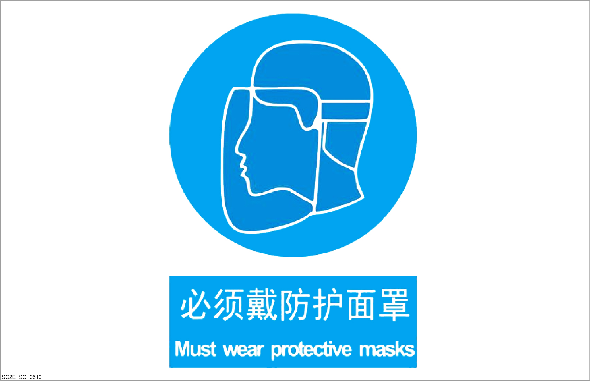
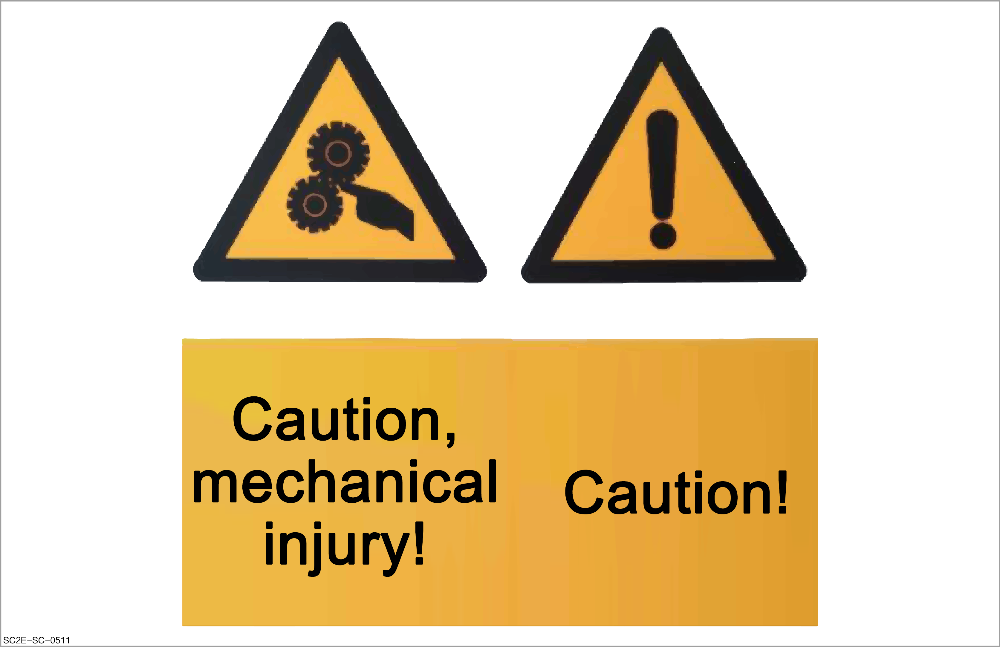
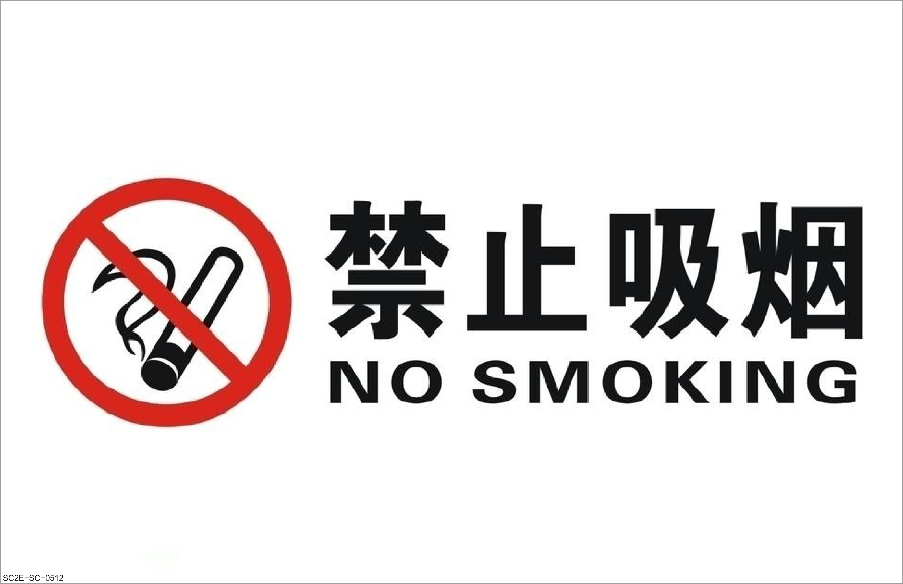
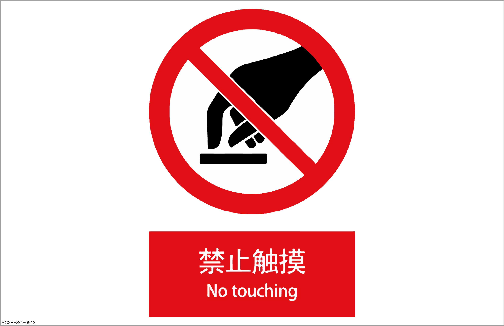
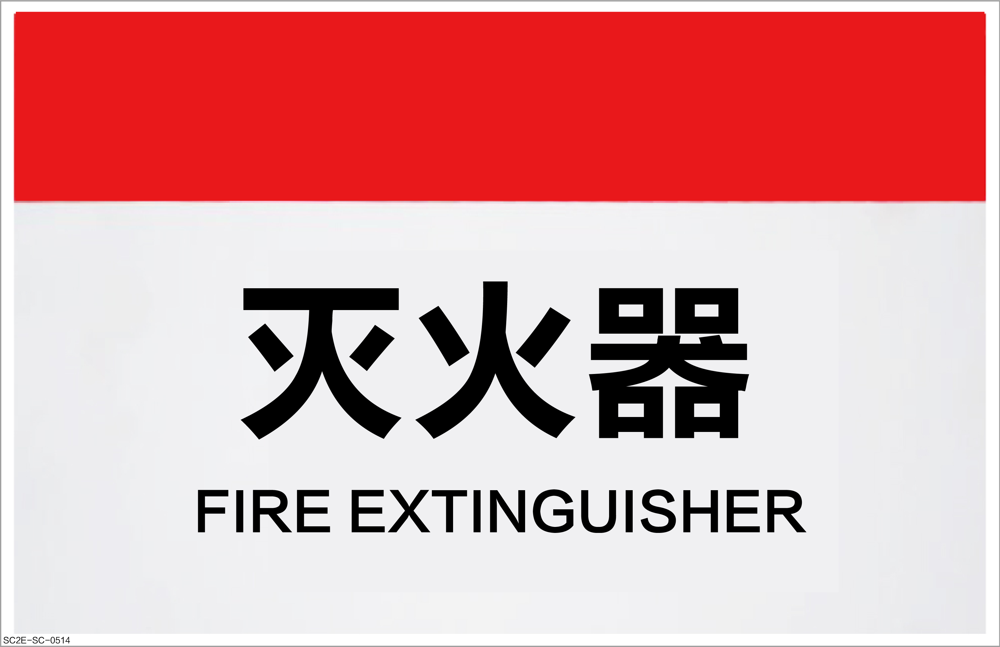
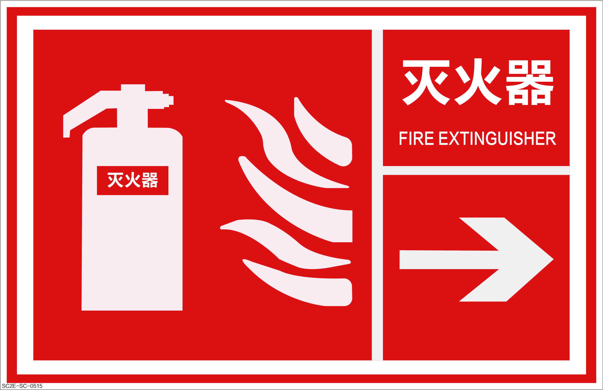
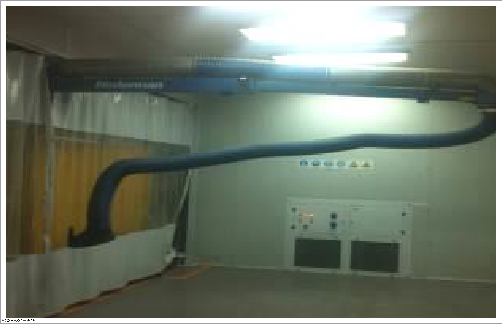
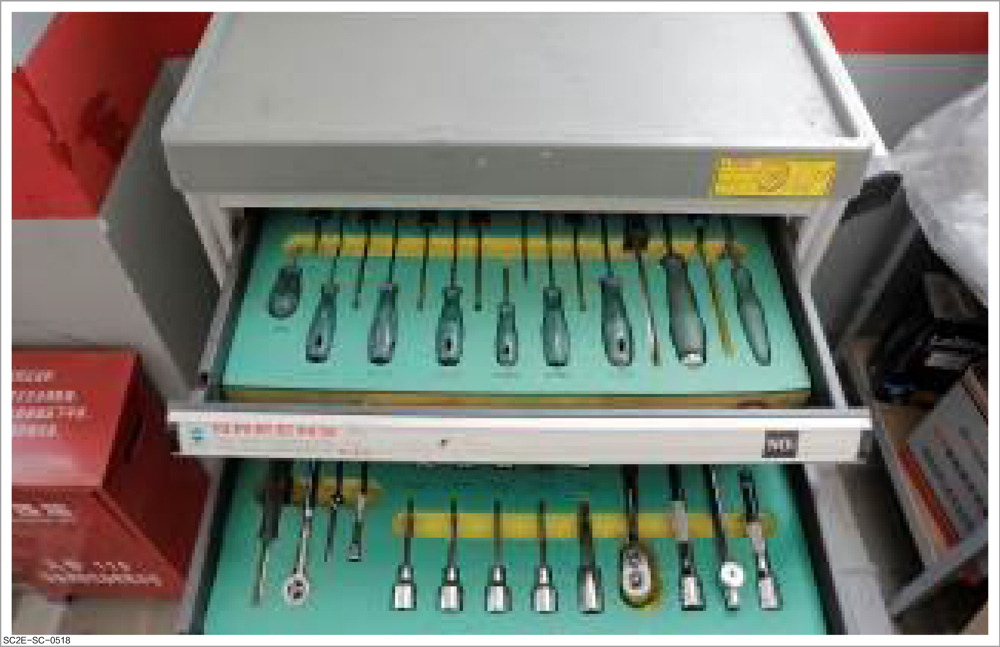
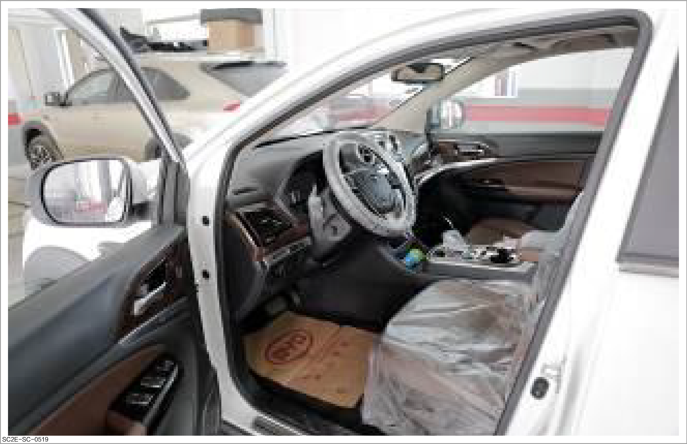
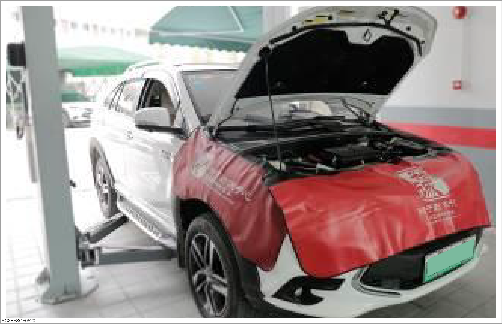

Site safety and vehicle protection
Site safety

-
Before entering the workshop, repair technicians must know the location of exit passageway and emergency exit to ensure safe evacuation in case of an emergency.
-
When working in the workshop, repair technicians must maintain a good working environment to ensure safe and orderly work. On the contrary, if they work in a dirty and messy environment, there will be uncertain hazards at any time.
- The staff shall drive the vehicle in strict accordance with the driving requirements of the factory, and shall not drive in violation of regulations such as speeding or reversing.
To ensure safety, they shall follow the following operation signs when working at the operation site.
Indicative signs
-
Blue: Protective signs, which indicates that protective masks must be worn.

-
Yellow: Warning signs. The signs below indicate to be careful of mechanical injury and pay attention to safety.

Prohibition signs
Violation of prohibition signs may result in serious personal injury and property damage.
-
No smoking: Do not smoke in the area with corresponding signs.

-
No touching: If this sign exists in the corresponding area or on the equipment, do not touch the corresponding area or equipment.

Fire safety
In case of a fire, follow the sign below to find the fire extinguisher for emergency handling.
Before using the fire extinguisher, make sure that you have mastered how to use all kinds of fire extinguishing equipment.
-
Sign I:

-
Sign II:

Pumping and drainage facilities
-
When working with pollution, harmful gases and dust, be sure to turn on the workshop pumping and drainage facilities and wear protective equipment such as masks.
-
When repairing the aluminum alloy vehicle body, be sure to use special explosion-proof and anti-static pumping and drainage systems. Otherwise, there will be a risk of combustion and explosion.
-
The pumping and drainage facilities are mainly used to circulate the air between the workshop and outdoors and pump the harmful fume, dust, and harmful gases.

Site operation requirements
To ensure safety, technicians shall observe the following requirements during operation:
-
The sheet metal technicians shall wear specified protective equipment, especially workwear and safety shoes when entering the workshop.
-
The sheet metal technicians shall carefully check the tools and equipment for integrity before repair, check the power circuit before using electrical equipment to ensure that there is no short circuit or electric leakage, and report any problem found to workshop management personnel in time.
-
The sheet metal technicians shall adopt the correct repair methods in their work, read the safety specifications and operation methods before operating the equipment, and operate in strict accordance with the specifications during use.
-
The sheet metal technicians shall wear correct special protective equipment during special operations, such as welding and shaping. For details, please refer to Sheet metal protection
-
The working environment shall be cleaned and tidied up in time in strict accordance with the "6S" standard of the workshop. Its interpretation is as follows:
-
Seiri: Distinguish essential and non-essential items, move non-essential items out of the working area to reduce waste, keep only essential items, and lay a foundation for other 5S activities.
-
Seiton: Arrange and label the essential items in an orderly manner to ensure that anyone can quickly find the required items and promptly return them to their original position, thereby enhancing work efficiency
-
Seiso: Clean the working environment regularly, including machines, tools, and working stands, remove garbage, dust, and dirt, to prevent equipment faults and deterioration of the working environment, and check and identify potential problems.
-
Seiketsu: Maintain tidiness, orderliness, and cleanliness, establish standards and regulations to ensure the continuous implementation of the first three "S" activities, and regularly inspect to keep the workplace neat.
-
Shitsuke: Cultivate employees' habits of abiding by rules and continuously implementing the first 4 "S" activities, improve their initiative and self-discipline, and form a good work culture and habits.
-
Safety: Based on all the above activities, emphasize the importance of safety, prevent accidents, protect the health and safety of employees, and create a safe working environment. Although "Safety" was not originally included in the original "5S", it has been widely added to form the current "6S" management system.
-
-
The sheet metal technicians shall clearly know where the fire extinguisher is placed, and use it correctly.
-
New employees shall receive pre-job training before working in the workshop.
-
Correct case:

Vehicle protection
Take the following protections before the vehicle is repaired:
-
Protect the interior trims of the vehicle with a three-piece set for repair.
-
Protect the side of the vehicle and the fender with a fender sheath. (Provide this protection according to actual needs during sheet metal painting)

-
Protect the front of the vehicle with the bumper sheath. (Provide this protection according to actual needs during sheet metal painting)

-
Use the fire blanket for welding during welding.